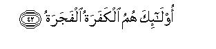

بسم الله الرحمن الرحيم
Sayyid Abul Ala Maududi - Tafhim al-Qur'an - The Meaning of the Qur'an
 80.
Surah Abasa (He Frowned)
80.
Surah Abasa (He Frowned)
The Surah is so designated after the word `abasa with which it opens.
The commentators and traditionists are unanimous about the occasion of the revelation of this Surah. According to them, once some big chiefs of Makkah were sitting in the Holy Prophet's assembly and he was earnestly engaged in trying to persuade them to accept Islam. At that very point, a blind man, named Ibn Umm Maktum, approached him to seek explanation of some point concerning Islam. The Holy Prophet (upon whom be peace) disliked his interruption and ignored him. Thereupon Allah sent down this Surah. From this historical incident the period of the revelation of this Surah can be precisely determined.
In the first place, it is confirmed that Hadrat Ibn Umm Maktum was one of the earliest converts to Islam. Hafiz Ibn Hajar and Hafiz Ibn Kathir have stated that he was one of those who had accepted Islam at a very early stage at Makkah.
Secondly, some of the traditions of the Hadith which relate this incident show that he had already accepted Islam and some others show that be was inclined to accept it and had approached the Holy Prophet in search of the truth. Hadrat Aishah states that coming to the Holy Prophet he had said: "O Messenger of Allah, guide me to the straight path." (Tirmidhi, Hakim, Ibn Hibban, Ibn Jarir, Abu Ya'la. According to Hadrat Abdullah bin Abbas, he had asked the meaning of a verse of the Qur'an and said to the Holy Prophet: "O Messenger of Allah, teach me the knowledge that Allah has taught you." Ibn Jarir, Ibn Abu Hatim). These statements show that he had acknowledged the Holy Prophet (upon whom be peace as a Messenger of Allah and the Quran as a Book of Allah. Contrary to this, Ibn Zaid has interpreted the words la allahu yazzakka of verse 3 to mean: la allahu yuslim: "maybe that he accepts Islam." (Ibn Jarir) And Allah's own words: "What would make you know that he might reform, or heed the admonition, and admonishing might profit him?" and "The one who comes to you running, of his own will, and fears, from him you turn away", point out that by that time he had developed in himself a deep desire to learn the truth: he had come to the Holy Prophet with the belief that he was the only source of guidance and his desire would be satisfied only through him; his apparent state also reflected that if he was given instruction, he would benefit by it.
Thirdly, the names of the people who were sitting in the Holy Prophet's assembly at that time, have been given in different traditions. In this list we find the names of `Utbah, Shaibah, Abu Jahl, Umayyah bin Khalaf, Ubayy bin Khalaf, who were the bitterest enemies of Islam. This shows that the incident took place in the period when these chiefs were still on meeting terms with the Holy Prophet and their antagonism to Islam had not yet grown so strong as to have stopped their paying visits to him and having dialogues with him off and on. All these arguments indicate that this is one of the very earliest Surahs to be revealed at Makkah.
In view of the apparent style with which the discourse opens, one feels that in this Surah Allah has expressed His displeasure against the Holy Prophet (upon whom be peace) for his treating the blind man with indifference and attending to the big chiefs exclusively. But when the whole Surah is considered objectively, one finds that the displeasure, in fact, has been expressed against the disbelieving Quraish, who because of their arrogant attitude and indifference to the truth, were rejecting with contempt the message of truth being conveyed by the Holy Prophet (upon whom be peace). Then, besides teaching him the correct method of preaching, the error of the method that he was adopting at the start of his mission has also been pointed out. His treating the blind man with neglect and disregard and devoting all his attention to the Quraish chiefs was not for the reason that he regarded the rich as noble and a poor blind man as contemptible, and, God forbid, there was some rudeness in his manner for which Allah reproved him. But, as a matter of fact, when a caller to Truth embarks on his mission of conveying his message to the people, he naturally wants the most influential people of society to accept his message so that his task becomes easy, for even if his invitation spreads among the poor and weak people, it cannot make much difference. Almost the same attitude had the Holy Prophet (upon whom be peace) also adopted in the beginning, his motive being only sincerity and a desire to promote his mission and not any idea of respect for the big people and hatred for the small people. But Allah made him realize that that was not the correct method of extending invitation to Islam, but from his mission's point of view, every man, who was a seeker after truth, was important, even if he was weak, or poor, and every man, who was heedless to the truth, was unimportant, even if he occupied a high position in society. Therefore, he should openly proclaim and convey the teachings of Islam to all and sundry, but the people who were really worthy of his attention, were those who were inclined to accept the Truth, and his sublime and noble message was too high to be presented before those haughty people who in their arrogance and vanity thought that they did not stand in need of him but rather he stood in need of them.
This is the theme of vv. 1-16. From verse 17 onward the rebuke directly turns to the disbelievers, who were repudiating the invitation of the Holy Messenger of Allah (upon whom be peace). In this, first they have been reproved for their attitude which they had adopted against their Creator, Providence and Sustainer. In the end, they have been warned of the dreadful fate that they would meet in consequence of their conduct on the Day of Resurrection.

In the name of Allah, the Compassionate, the Merciful.


[1-16] He frowned and turned away his face because there came up to him the blind man.1 And what would make you know that he might reform, or heed the admonition, and admonishing might profit him? As for him who is indifferent, to him you attend, though you would not be responsible if he did not reform. And the one 'who comes to you running, of his own will, and fears, from him you turn away.2 By no means!3 This is but an admonition.4 Let him who wills accept it. It is written in scrolls, which are honored, exalted, purified,5 (and which) remain in the hands of noble6 and virtuous scribes.7

[17-32] Cursed8 be man!9 What a perverse disbeliever he is!10 Out of what has Allah created him? Out of a sperm drop.11 Allah created him, then set him his destiny,12 then made the way of life easy for him13 then caused him to die, and brought. him to the grave.14 Then whenever He wills, He .will raise him up again to life.15 Nay, but he has not fulfilled the duty that Allah-had assigned to him.16 Then let man look at his food.17 We poured down water in abundance,18 then cleft the earth asunder,19 then caused to grow in it corns and grapes and Vegetables and olives and dates and lush gardens and fruits of every kind and fodder as a means of sustenance for you and your cattle.20


[33-42] At last, when the deafening blast is sounded,21 that Day shall man flee from his brother and his mother and his father and his wife and his children.22 Each one of them, on that Day, shall have enough to occupy him so as to make him heedless of others.23 Some faces on that Day shall be shining, rejoicing and joyful. And some faces on that Day shall be dusty, and darkness shall be covering them. These will be the disbelievers and the sinners.
1The style of this first sentence is elegant and subtle. Although in the following sentences the Holy Prophet (upon whom be peace) has been directly addressed, which by itself shows that the act of frowning and turning aside had issued forth from him, the discourse has been opened in a manner as though it was not he but some one else who had so acted. By this style the Holy Prophet (upon whom be peace), by a subtle method, has been made to realize that it was an act unseemly for him. Had somebody familiar with his high morals witnessed it, he would have thought that it was not he but some other person who had behaved in that manner.
The blind man referred to here implies, as we have explained in the Introduction, the well-known Companion, Hadrat Ibn Umm Maktum. Hafiz Ibn 'Abdul Barr in Al-Isti'ab and Hafiz Ibn Hajar in Al-Isbah have stated that he was a first cousin of the Holy Prophet's wife, Hadrat Khadijah. His mother, Umm Maktum, and Hadrat Khadijah's father, Khuwailid, were sister and brother to each other. After one knows his relationship with the Holy Prophet, there remains no room for the doubt that he had turned away from him regarding him as a poor man having a low station in life, and attended to the high-placed people, for he was the Holy Prophet's brother-in-law and a man of noble birth. The reason why the Holy Prophet had shown disregard for him is indicated by the word a ma (blind man), which Allah Himself has used as the cause of the Holy Prophet's inattention. That is, the Holy Prophet thought that even if a single man from among the people whom he was trying to bring to the right path, listened to him and was rightly guided, be could become a powerful means of strengthening Islam. On the contrary, Ibn Umm Maktum was a blind man, who could not prove to be so useful for Islam because of his disability as could one of the Quraish elders on becoming a Muslim. Therefore, he should not interrupt the conversation at that time; whatever he wanted to ask or learn, he could ask or learn at some later time.
2This is the real point which the Holy Prophet (upon whom be peace) had overlooked in the preaching of Islam on that occasion, and for teaching him the same Allah first reproved him on his treatment of Ibn Umm Maktum, and then ' told him what really deserved to occupy his attention as preacher of the Truth and what did not. There is a man whose apparent state clearly shows that he is a seeker after truth: he fears lest he should follow falsehood and invite Allah's wrath; therefore, he comes all the way in search of the knowledge of the true faith. There is another man, whose attitude clearly reflects that he has no desire for the truth; rather on the contrary, he regards himself as self-sufficient, having no desire to be guided to the right way. Between these two kinds of men one should not see whose becoming a Muslim would be of greater use for Islam and whose becoming a believer could not be of any use in its propagation. But one should see as to who was inclined to accept the guidance and reform himself, and who was least interested in this precious bargain. The first kind of man, whether he is blind, lame, crippled. or an indigent mendicant, who might apparently seem incapable of rendering any useful service in the propagation of Islam, is in any case a .valuable man for the preacher to the Truth. To him therefore he should attend, for the real object of this invitation is to reform the people, and the apparent state of the person shows that if he was instructed he would accept guidance. As for the other kind of man, the preacher has no need to pursue him, no matter how influential he is in society. For his attitude and conduct openly proclaim that he has no desire for reform; therefore, any effort made to reform him would be mere waste of time. If he has no desire to reform himself, he may nor the loss would be his, the preacher would not at all be accountable for it.
3That is, "You should never do so: do not give undue importance to those who have forgotten God and become proud of their high worldly position. The teaching of Islam is not such that it should be presented solicitously before him who spurns it, nor should a man like you try to invite these arrogant people to Islam in a way as may cause them the misunderstanding that you have a selfish motive connected with them, and that your mission would succeed only if they believed, otherwise not, whereas the fact is that the Truth is as self-sufficient of them as they are of the Truth."
4The allusion is to the Qur'an.
5"Purified" : free from all kinds of mixtures of false ideas and thoughts, and presenting nothing but the pure Truth. There is no tinge whatever in these scrolls of the impurities with which the other religious boors of the world have been polluted. They have been kept pure and secure from all kinds of human speculation and evil suggestions.
6This refers to the angels who were writing the scrolls of the Qur'an under the direct guidance of Allah, were guarding them and conveying them intact to the Holy Prophet (upon whom be peace). Two words have been used to qualify them: karim, i.e. noble, and barr, i.e. virtuous. The first word is meant to say that they are . so honored and noble that it is not possible that such exalted beings would commit even the slightest dishonesty in the trust reposed in them. The second word has been used to tell that they carry out the responsibility entrusted to them of writing down the scrolls, guarding them and conveying them to the Messenger with perfect honesty and integrity.
7If the context in which these verses occur, is considered deeply, it becomes obvious that here the. Qur'an has not been praised for the sake of its greatness and glory but to tell the arrogant people, who were repudiating its message with contempt, plainly: "The glorious Qur'an is too holy and exalted a Book to be presented before you humbly with the request that you may kindly accept it if you so please. For it does not stand in need of you as you stand in need of it. If you really seek your well-being, you should clear your head of the evil thoughts and submit to its message humbly; otherwise you are not so self-sufficient of this Book as this Book is self-sufficient of you. Your treating it with scorn and contempt will not affect its glory and greatness at all, rather your own pride and arrogance will be ruined on account of it.
8From here the rebuke turns directly against the disbelievers, who were treating the message of the Truth with scant attention. Before this, from the beginning of the Surah to verse 16, the address though apparently directed to the Holy Prophet (upon whom be peace), was actually meant to reprimand the disbelievers, as if to say: "O Prophet, why are you ignoring a seeker after truth and paying all your attention to those who are worthless from your mission's point of view? they do not deserve that a great Prophet like you should present a sublime thing like the Qur'an before them."
9At all such places in the Qur'an, "man" does not imply every individual of the human race but the people whose evil traits of character are intended to be censured. At some places the word "man" is used because the evil traits are found in most of human beings, and at others for the reason that if the particular people are pin-pointed for censure, it engenders stubbornness. Therefore, admonition is given in general terms so as to be more effective. (For further explanation, see E.N. 65 of Ha Mim As-Sajdah, E.N. 75 of Ash-Shura).
10Another meaning also can be: "What caused him to be inclined to kufr?" Or, in other words: "On what strength does he commit kufr?' Kufr?" then means denial of the Truth as well as ingratitude for the favors of one's benefactor and also rebellious attitude against one's Creator, Providence and Master.
11That is, let him first consider out of what he was created, where he was nourished and developed, by what way he came into the world, and from what helpless state he began his life in the world. Why does he forget his such beginning and becomes involved in conceit and haughtiness and why does he feel so puffed up as to resist his Creator and stand before Him as an adversary? (The same theme has been expressed in Ya Sin 77-78 above).
12That is, he was yet developing and taking shape in his mother's womb when his destiny was set for him. It was determined what would be his sex, his color, his size; the extent and volume of his body, the extent to which his limbs would be sound or unsound, his appearance and voice, the degree of Physical strength and mental endowments, what would be the land, the family, the conditions and environments in which he would take birth, develop and be molded into a specific person, what would be the hereditary influences and effects of the surroundings and the role and impact of his own self in the make-up of his personality, the part he would play in his life of the world, and how long he would be allowed to function on the earth. He cannot swerve even a hair-breadth from his destiny, nor can effect the slightest alteration in it. Then, how strange is his daring and stubbornness! He commits disbelief of the Creator before Whose destiny he is so helpless and powerless!
13That is, He created all those means and provisions in the world, which he could utilize, otherwise all the capabilities of his body and mind would have remained useless, had not the Creator provided the. means and created the possibilities on the earth to employ them. Furthermore, the Creator also gave him the opportunity to choose and adopt for himself whichever of the ways, good or evil, of gratitude or ingratitude, of obedience or disobedience, that he pleased. He opened up both the ways before him and made each way smooth and easy so that he could follow any way that he liked.
14That is, not only in the matter of birth and destiny but in the matter of death also he is absolutely helpless before his Creator. Neither he can take birth by his choice nor die by his choice, nor can defer his death even by a moment. He dies precisely at the appointed time, in the appointed place, under the appointed circumstances that have been decreed for his death, and he is deposited in the type of grave destined for him whether it is the belly of the earth, the depths of the sea, a bonfire. or the stomach of a beast. Nothing to say of the man, even the whole world together cannot change the Creator's decree in respect of any person.
15That is, he does not either have the power to refuse to rise up when the Creator may will to resurrect him after death. When he was first created, he was not consulted: he was not asked whether he wanted to be created or not. Even if he had refused, he would have been created. Likewise, his resurrection also is not dependent upon his will and assent that he may rise from death if he so likes, or refuse to rise if he does not like. In this matter also he is absolutely helpless before the Creator's will. Whenever He wills He will resurrect him, and he will have to rise whether he likes it or not.
16"Duty" implies the duty that Allah has enjoined on every man in the form of natural guidance as well as the duty to which man's own existence and every particle of the universe, from the earth to the heavens, and every manifestation of Divine power are pointing, and that duty also which Allah has conveyed in every age through His Prophets and Books and disseminated through the righteous people of every period. (For explanation, see E.N. 5 of Surah Ad- Dahr). In the present context the object is to express the meaning that on the basis of the truths stated in the above verses, it was man's duty to have obeyed his Creator, but, contrary to this, he adopted the way of disobedience and did not fulfill the demand of his being His creature.
17That is, let him consider the food, which he regards as an ordinary thing, how it is created. Had God not provided the means for it, it was not in the power of man himself to have created the food on the earth in any way.
18This refers to rainwater: water vapors are raised in vast quantities from the oceans by the heat of the sun: then they are turned into thick clouds; then the winds blow and spread them over different parts of the earth; then because of the coolness in the upper atmosphere the vapors turn back to water and fall as rain in every area in a particular measure. The water not only falls as rain directly on the earth but also collects underground in the shape of wells and fountains, flows in the form of rivers and streams, freezes on the mountains as snow and melts and flows into rivers in other seasons as well than the rainy season. Has man himself made all these arrangements? Had his Creator not arranged this for his sustenance, could man survive on the earth?
19"Cleaving the earth asunder" implies cleaving it in a way that the seeds, or seed-stones, or vegetable seedlings that man sows or plants in it, or which are deposited in it by winds or birds, or by some other means, should sprout up. Man can do nothing more than to dig the soil, or plough it, and bury in it the seeds that God has already created. Beyond this everything is done by God. It is He Who has created the seeds of countless species of vegetable; it is He Who has endowed these seeds with the quality that when they are sown in the soil, they should sprout up and from every seed vegetable of its own particular species should grow. Again it is He Who has created in the earth the capability that in combination with water it should break open the seeds and develop and nourish every species of vegetable with the kind of food suitable for it. Had God not created the seeds with these qualities and the upper layers of the earth with these capabilities, man could not by himself have arranged any kind of food on the earth.
20That is, "A means of sustenance not only for you but also for those animals from which you obtain items of food like meat, fat, milk, butter, etc. and which perform countless other services also for your living. You benefit by all this and yet you disbelieve in God Whose provisions sustain you."
21The final terrible sounding of the Trumpet at which all dead men shall be resurrected to life.
22A theme closely resembling this has already occurred in AI-Ma'arij: 10-14 above. "Fleeing" may also mean that when he sees those nearest and dearest to him in the .world, involved in distress, instead of rushing forth to help them, he will run away from them lest they should call out to him for help; and it may also mean that when they see the evil consequences of committing sin for the sake of one another and misleading one another, fearless of God and heedless of the Hereafter, in the world, each one would flee from the other lest the other should hold him responsible for his deviation and sin. Brother will fear brother, children their parents, husband his wife, and parents their children lest they should become witnesses in the case against them.
23A tradition has been reported in the. Hadith by different methods and through different channels, saying that the Holy Prophet (upon whom be peace) said: "On the Day of Resurrection all men will rise up naked." One of his wives (according to some reporters, Hadrat `A'ishah, according to others, Hadrat Saudah, or a woman) asked in bewilderment: "O Messenger of Allah, shall we (women) appear naked on that Day before the people?” The Holy prophet recited this very verse and explained that on that Day each one will have enough of his own troubles to occupy him, and will be wholly unmindful of others. (Nasa'i, Tirmidhi, Ibn Abi Hatim, Ibn Jarir, Tabarani Ibn Marduyah, Baihaqi, Hakim).